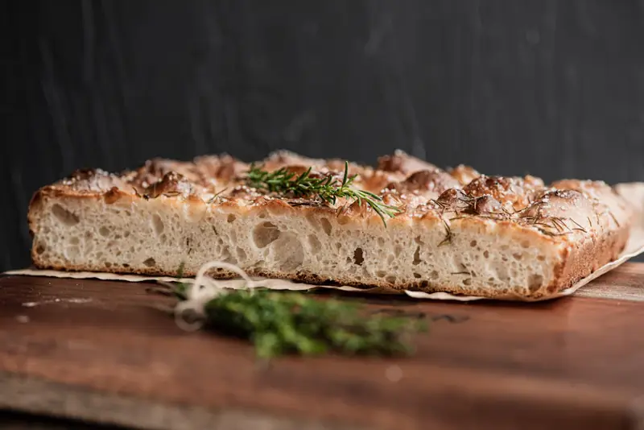
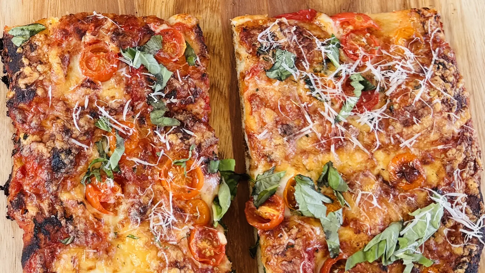
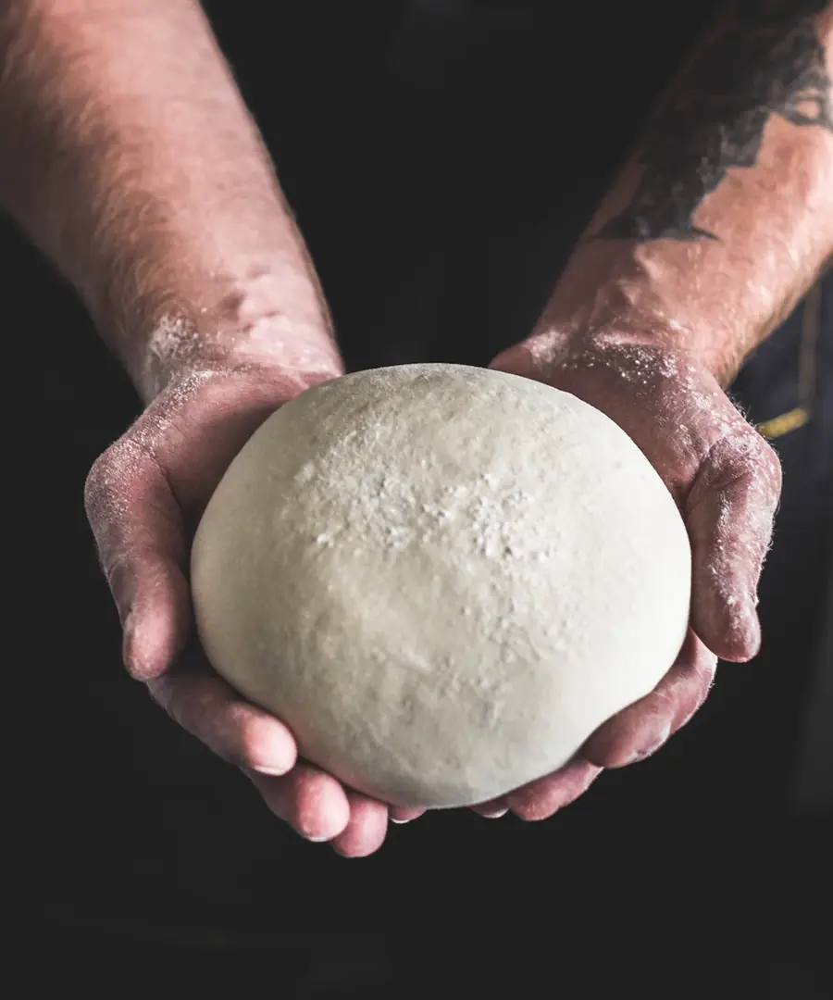
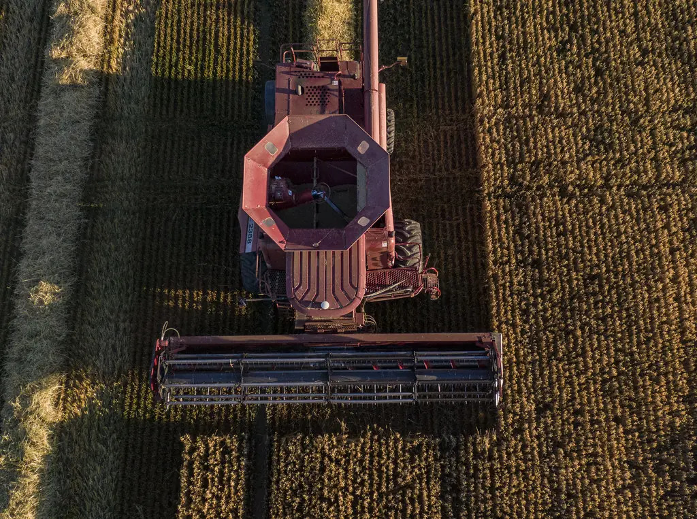
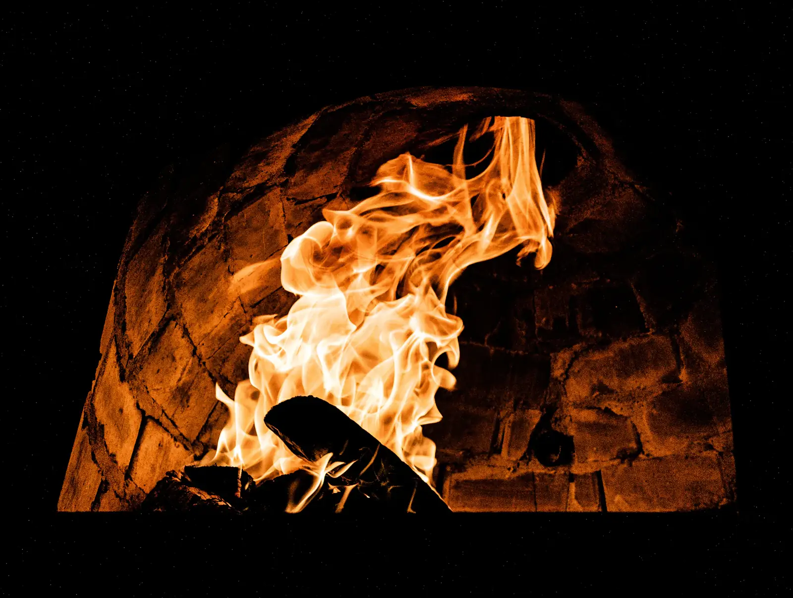
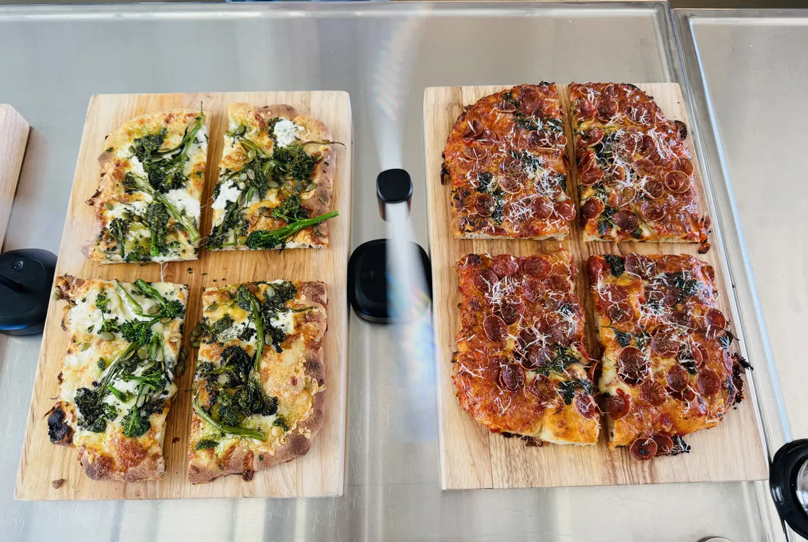

Dal nostro mulino
Le stesse farine della teglia, in sacchi da un chilo

Mollica · Trastevere
Dal 2009 pizza in teglia a lievitazione lenta, venduta a etti
Il forno del vicolo
Tre farine, quarantotto ore, una pala di legno
Scopri come lavoriamo
Al banco oggi
Prezzi al chilo. Scegli i grammi, vedi subito quanto è larga la fetta e quanto costa.
Teglie sfornate ogni 40 minuti
La bottega

Le stesse farine della teglia, in sacchi da un chilo

La filosofia

Laboratori del sabato
Impasto, stesura in teglia, cottura. Otto posti, grembiule incluso, €65

Newsletter
Rossa
Laboratorio · €65 a persona